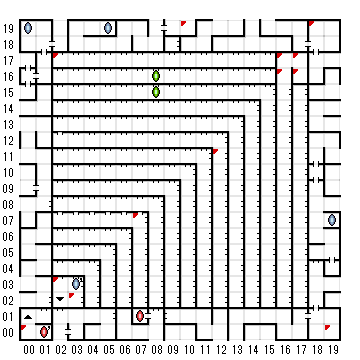

【 x：0，y：0 】
Goldmedrionを渡す前だと2，2にワープさせられる
【 x：2，y：17 】
扉ではないが戻れない
【 x：2，y：3 】
引き返すが得策とは思わんかな？
【 x：3，y：2 】
反対側へ行く気はないか？
【 x：7，y：7 】
年老いた修道士が目の前に現れた
汝の魂とひきかえに
この箱の中身が得られよう
探しますか
GOLD MEDALLION
【 x：10，y：19 】
(1)
暗い水たまりの上から
幽霊が手招きしている
その奥底には、不吉な影がうごめいている
探しますか
(2)
Goldmedarionを渡すことになる
【 x：12，y：11 】
このあたりに３Ｆ最初に戻るワープ
【 x：16，y：17 】
このわなは時を刻みしもの…
【 x：16，y：16 】
墓場は暗く…
【 x：17，y：17 】
この先へ行かぬが得策、しからずんば…
【 x：17，y：16 】
石の中にいる！
【 x：18，y：19 】
アブドルのタクシー
【 x：19，y：0 】
アブドルのタクシー